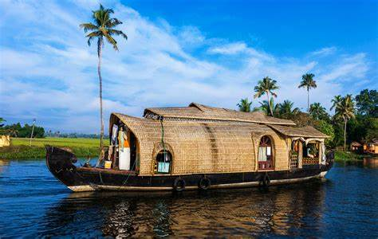

Alapuzha
House Boat

House Boat
Beautiful Alleppey Houseboats is a trusted safe and secure boathouse tour operator in Alappuzha since 2007. We have Deluxe to Premium Alleppey houseboat packages to book online that suit your requirements. You can book 1 bedroom up to 10 bedrooms from here. Experience this relaxing travel in Kerala Boat House on one of the best houseboat service providers in Alleppey with moderate rates.
Traveling in Alleppey Houseboat is the best way to enjoy the Beauty of Backwater. Experience this relaxing travel in Beautiful Alleppey Houseboats. So, if you are the kind of person looking for the best houseboat travel experience rather than just a stay, then this is the right place. Assured service with Good, Friendly, and supportive staff to make your trip more enjoyable.
One of the best ways to explore the Beauty of Alleppey Backwaters. The Houseboat in Alleppey is one of the major attractions in Kerala Tourism. Most of the Houseboats are operating from Alleppey and Kumarakom. Alleppey is the best and most recommended place for Houseboat Cruising.
The cruising on the backwaters of Alleppey makes you feel relaxed. The houseboats come in different sizes and comfort and are wonderful works of art. It is like sliding on a waterbed while you relax in the cool breeze and witness the many forms of backwater life around you.
Alappuzha Beach

Alapuzha Beach
This is one of the most popular picnic spots in Alappuzha. The pier, which extends into the sea here, is over 137 years old. Entertainment facilities at the Vijaya Beach Park add to the attractions of the beach. There is also an old light house which is greatly fascinating to visitors.This place has huge network of freshwater rivers, meandering lakes, and lagoons. One can try adventurous activities at the beach like boating, or enjoy at children's park with toy bicycles or trains. Hallowed with natures green beauty and scenery, Alappuzha is a wonderland of Kerala state. Alappuzha beach is a famous picnic spot and so it's a favorite gateway for locals.
This beach is also popular for the grand event of Nehru Trophy Boat Race that takes place every year in the month of August. It's a very big event and large number of tourist flock this place on this very day. In addition to this, there are some historic remnants that add colonial atmosphere to the entire area. No doubt, holidaying in Alappuzha has become a synonym of Kerala tourism. Vacationing over here is a bubbly event and it's all because of the rich blend of the Sea and Sun.